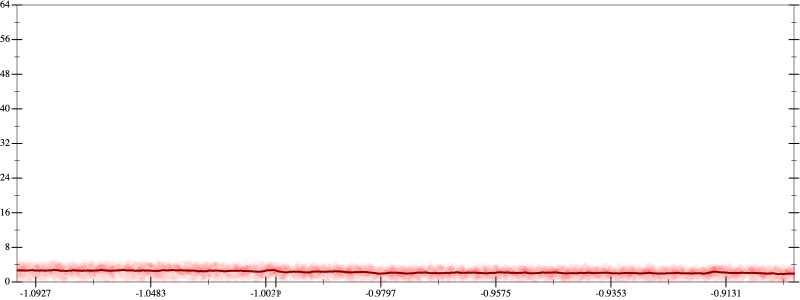
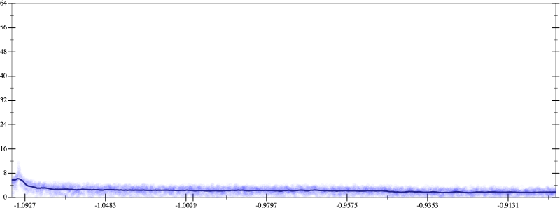
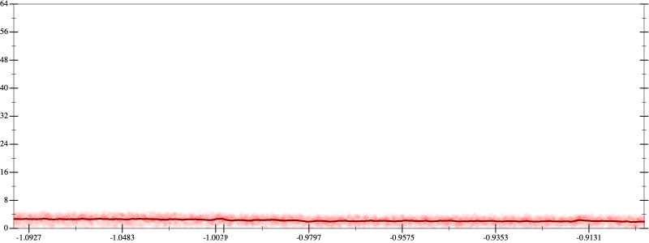
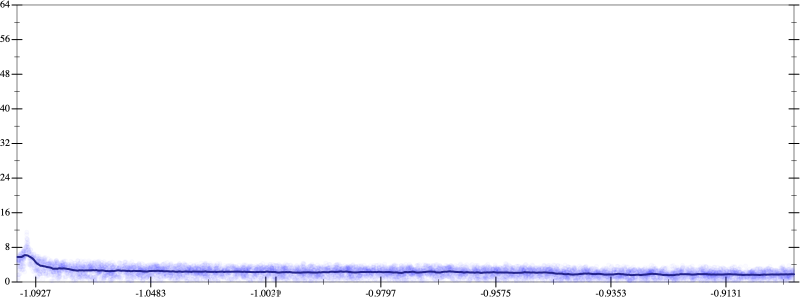

Initial program 2.3
\[\left(\left(\left(\left(-665280.0 \cdot x + 2217600.0 \cdot \left(\left(x \cdot x\right) \cdot x\right)\right) + -1774080.0 \cdot \left(\left(\left(\left(x \cdot x\right) \cdot x\right) \cdot x\right) \cdot x\right)\right) + 506880.0 \cdot \left(\left(\left(\left(\left(\left(x \cdot x\right) \cdot x\right) \cdot x\right) \cdot x\right) \cdot x\right) \cdot x\right)\right) + -56320.0 \cdot \left(\left(\left(\left(\left(\left(\left(\left(x \cdot x\right) \cdot x\right) \cdot x\right) \cdot x\right) \cdot x\right) \cdot x\right) \cdot x\right) \cdot x\right)\right) + 2048.0 \cdot \left(\left(\left(\left(\left(\left(\left(\left(\left(\left(x \cdot x\right) \cdot x\right) \cdot x\right) \cdot x\right) \cdot x\right) \cdot x\right) \cdot x\right) \cdot x\right) \cdot x\right) \cdot x\right)\]
Applied simplify2.2
\[\leadsto \color{blue}{\left(\left({x}^{3} \cdot \left({x}^{3} \cdot {x}^{3}\right)\right) \cdot \left(x \cdot \left(x \cdot 2048.0\right) + -56320.0\right) + \left(\left(\left(506880.0 \cdot x\right) \cdot \left(x \cdot x\right)\right) \cdot \left(\left(x \cdot x\right) \cdot \left(x \cdot x\right)\right) + -665280.0 \cdot x\right)\right) + \left(x \cdot x\right) \cdot \left(2217600.0 \cdot x + \left(x \cdot -1774080.0\right) \cdot \left(x \cdot x\right)\right)}\]
- Using strategy
rm Applied flip-+2.2
\[\leadsto \color{blue}{\frac{\left(\left({x}^{3} \cdot \left({x}^{3} \cdot {x}^{3}\right)\right) \cdot \left(x \cdot \left(x \cdot 2048.0\right) + -56320.0\right) + \left(\left(\left(506880.0 \cdot x\right) \cdot \left(x \cdot x\right)\right) \cdot \left(\left(x \cdot x\right) \cdot \left(x \cdot x\right)\right) + -665280.0 \cdot x\right)\right) \cdot \left(\left({x}^{3} \cdot \left({x}^{3} \cdot {x}^{3}\right)\right) \cdot \left(x \cdot \left(x \cdot 2048.0\right) + -56320.0\right) + \left(\left(\left(506880.0 \cdot x\right) \cdot \left(x \cdot x\right)\right) \cdot \left(\left(x \cdot x\right) \cdot \left(x \cdot x\right)\right) + -665280.0 \cdot x\right)\right) - \left(\left(x \cdot x\right) \cdot \left(2217600.0 \cdot x + \left(x \cdot -1774080.0\right) \cdot \left(x \cdot x\right)\right)\right) \cdot \left(\left(x \cdot x\right) \cdot \left(2217600.0 \cdot x + \left(x \cdot -1774080.0\right) \cdot \left(x \cdot x\right)\right)\right)}{\left(\left({x}^{3} \cdot \left({x}^{3} \cdot {x}^{3}\right)\right) \cdot \left(x \cdot \left(x \cdot 2048.0\right) + -56320.0\right) + \left(\left(\left(506880.0 \cdot x\right) \cdot \left(x \cdot x\right)\right) \cdot \left(\left(x \cdot x\right) \cdot \left(x \cdot x\right)\right) + -665280.0 \cdot x\right)\right) - \left(x \cdot x\right) \cdot \left(2217600.0 \cdot x + \left(x \cdot -1774080.0\right) \cdot \left(x \cdot x\right)\right)}}\]
Applied simplify2.2
\[\leadsto \frac{\color{blue}{\left(\left(x \cdot -665280.0 + \left(\left(x \cdot x\right) \cdot \left(x \cdot 506880.0\right)\right) \cdot \left(\left(x \cdot x\right) \cdot \left(x \cdot x\right)\right)\right) + \left(-56320.0 + x \cdot \left(2048.0 \cdot x\right)\right) \cdot {\left({x}^{3}\right)}^{3}\right) \cdot \left(\left(x \cdot -665280.0 + \left(\left(x \cdot x\right) \cdot \left(x \cdot 506880.0\right)\right) \cdot \left(\left(x \cdot x\right) \cdot \left(x \cdot x\right)\right)\right) + \left(-56320.0 + x \cdot \left(2048.0 \cdot x\right)\right) \cdot {\left({x}^{3}\right)}^{3}\right) - \left(\left(\left(x \cdot x\right) \cdot \left(-1774080.0 \cdot x\right) + x \cdot 2217600.0\right) \cdot \left(x \cdot x\right)\right) \cdot \left(\left(\left(x \cdot x\right) \cdot \left(-1774080.0 \cdot x\right) + x \cdot 2217600.0\right) \cdot \left(x \cdot x\right)\right)}}{\left(\left({x}^{3} \cdot \left({x}^{3} \cdot {x}^{3}\right)\right) \cdot \left(x \cdot \left(x \cdot 2048.0\right) + -56320.0\right) + \left(\left(\left(506880.0 \cdot x\right) \cdot \left(x \cdot x\right)\right) \cdot \left(\left(x \cdot x\right) \cdot \left(x \cdot x\right)\right) + -665280.0 \cdot x\right)\right) - \left(x \cdot x\right) \cdot \left(2217600.0 \cdot x + \left(x \cdot -1774080.0\right) \cdot \left(x \cdot x\right)\right)}\]
Applied simplify2.2
\[\leadsto \frac{\left(\left(x \cdot -665280.0 + \left(\left(x \cdot x\right) \cdot \left(x \cdot 506880.0\right)\right) \cdot \left(\left(x \cdot x\right) \cdot \left(x \cdot x\right)\right)\right) + \left(-56320.0 + x \cdot \left(2048.0 \cdot x\right)\right) \cdot {\left({x}^{3}\right)}^{3}\right) \cdot \left(\left(x \cdot -665280.0 + \left(\left(x \cdot x\right) \cdot \left(x \cdot 506880.0\right)\right) \cdot \left(\left(x \cdot x\right) \cdot \left(x \cdot x\right)\right)\right) + \left(-56320.0 + x \cdot \left(2048.0 \cdot x\right)\right) \cdot {\left({x}^{3}\right)}^{3}\right) - \left(\left(\left(x \cdot x\right) \cdot \left(-1774080.0 \cdot x\right) + x \cdot 2217600.0\right) \cdot \left(x \cdot x\right)\right) \cdot \left(\left(\left(x \cdot x\right) \cdot \left(-1774080.0 \cdot x\right) + x \cdot 2217600.0\right) \cdot \left(x \cdot x\right)\right)}{\color{blue}{\left(\left(-56320.0 + x \cdot \left(2048.0 \cdot x\right)\right) \cdot {\left({x}^{3}\right)}^{3} + x \cdot -665280.0\right) + \left(x \cdot x\right) \cdot \left(\left(x \cdot x\right) \cdot \left(\left(x \cdot x\right) \cdot \left(x \cdot 506880.0\right)\right) - \left(\left(x \cdot -1774080.0\right) \cdot \left(x \cdot x\right) + x \cdot 2217600.0\right)\right)}}\]
- Using strategy
rm Applied add-cube-cbrt2.3
\[\leadsto \frac{\left(\left(x \cdot -665280.0 + \left(\left(x \cdot x\right) \cdot \left(x \cdot 506880.0\right)\right) \cdot \left(\left(x \cdot x\right) \cdot \left(x \cdot x\right)\right)\right) + \left(-56320.0 + x \cdot \left(2048.0 \cdot x\right)\right) \cdot {\left({x}^{3}\right)}^{3}\right) \cdot \left(\left(x \cdot -665280.0 + \left(\left(x \cdot x\right) \cdot \left(x \cdot 506880.0\right)\right) \cdot \left(\left(x \cdot x\right) \cdot \left(x \cdot x\right)\right)\right) + \left(-56320.0 + x \cdot \left(2048.0 \cdot x\right)\right) \cdot {\left({x}^{3}\right)}^{3}\right) - \left(\left(\left(x \cdot x\right) \cdot \left(-1774080.0 \cdot x\right) + x \cdot 2217600.0\right) \cdot \left(x \cdot x\right)\right) \cdot \left(\left(\left(x \cdot x\right) \cdot \left(-1774080.0 \cdot x\right) + x \cdot 2217600.0\right) \cdot \left(x \cdot x\right)\right)}{\left(\left(-56320.0 + x \cdot \left(2048.0 \cdot x\right)\right) \cdot {\left({x}^{3}\right)}^{3} + x \cdot -665280.0\right) + \left(x \cdot x\right) \cdot \left(\left(x \cdot x\right) \cdot \left(\left(x \cdot x\right) \cdot \left(x \cdot 506880.0\right)\right) - \color{blue}{\left(\sqrt[3]{\left(x \cdot -1774080.0\right) \cdot \left(x \cdot x\right) + x \cdot 2217600.0} \cdot \sqrt[3]{\left(x \cdot -1774080.0\right) \cdot \left(x \cdot x\right) + x \cdot 2217600.0}\right) \cdot \sqrt[3]{\left(x \cdot -1774080.0\right) \cdot \left(x \cdot x\right) + x \cdot 2217600.0}}\right)}\]
Taylor expanded around 0 2.3
\[\leadsto \frac{\left(\left(x \cdot -665280.0 + \left(\left(x \cdot x\right) \cdot \left(x \cdot 506880.0\right)\right) \cdot \left(\left(x \cdot x\right) \cdot \left(x \cdot x\right)\right)\right) + \left(-56320.0 + x \cdot \left(2048.0 \cdot x\right)\right) \cdot {\left({x}^{3}\right)}^{3}\right) \cdot \left(\left(x \cdot -665280.0 + \left(\left(x \cdot x\right) \cdot \left(x \cdot 506880.0\right)\right) \cdot \left(\left(x \cdot x\right) \cdot \left(x \cdot x\right)\right)\right) + \left(-56320.0 + x \cdot \left(2048.0 \cdot x\right)\right) \cdot {\left({x}^{3}\right)}^{3}\right) - \left(\left(\left(x \cdot x\right) \cdot \left(-1774080.0 \cdot x\right) + x \cdot 2217600.0\right) \cdot \left(x \cdot x\right)\right) \cdot \left(\color{blue}{\left(2217600.0 \cdot x - 1774080.0 \cdot {x}^{3}\right)} \cdot \left(x \cdot x\right)\right)}{\left(\left(-56320.0 + x \cdot \left(2048.0 \cdot x\right)\right) \cdot {\left({x}^{3}\right)}^{3} + x \cdot -665280.0\right) + \left(x \cdot x\right) \cdot \left(\left(x \cdot x\right) \cdot \left(\left(x \cdot x\right) \cdot \left(x \cdot 506880.0\right)\right) - \left(\sqrt[3]{\left(x \cdot -1774080.0\right) \cdot \left(x \cdot x\right) + x \cdot 2217600.0} \cdot \sqrt[3]{\left(x \cdot -1774080.0\right) \cdot \left(x \cdot x\right) + x \cdot 2217600.0}\right) \cdot \sqrt[3]{\left(x \cdot -1774080.0\right) \cdot \left(x \cdot x\right) + x \cdot 2217600.0}\right)}\]
Applied simplify2.2
\[\leadsto \color{blue}{\frac{\left(\left(-\left(x \cdot x\right) \cdot \left(x \cdot x\right)\right) \cdot \left(2217600.0 \cdot x - \left(1774080.0 \cdot x\right) \cdot \left(x \cdot x\right)\right)\right) \cdot \left(2217600.0 \cdot x + \left(x \cdot x\right) \cdot \left(x \cdot -1774080.0\right)\right) + \left(\left(\left(\left(x \cdot x\right) \cdot \left(x \cdot x\right)\right) \cdot \left(\left(x \cdot x\right) \cdot \left(x \cdot 506880.0\right)\right) + x \cdot -665280.0\right) + \left(-56320.0 + \left(x \cdot x\right) \cdot 2048.0\right) \cdot {\left({x}^{3}\right)}^{3}\right) \cdot \left(\left(\left(\left(x \cdot x\right) \cdot \left(x \cdot x\right)\right) \cdot \left(\left(x \cdot x\right) \cdot \left(x \cdot 506880.0\right)\right) + x \cdot -665280.0\right) + \left(-56320.0 + \left(x \cdot x\right) \cdot 2048.0\right) \cdot {\left({x}^{3}\right)}^{3}\right)}{\left(\left(x \cdot 506880.0\right) \cdot \left(\left(x \cdot x\right) \cdot \left(x \cdot x\right)\right) - \left(2217600.0 \cdot x + \left(x \cdot x\right) \cdot \left(x \cdot -1774080.0\right)\right)\right) \cdot \left(x \cdot x\right) + \left(\left(-56320.0 + \left(x \cdot x\right) \cdot 2048.0\right) \cdot {\left({x}^{3}\right)}^{3} + x \cdot -665280.0\right)}}\]
- Using strategy
rm Applied flip-+2.3
\[\leadsto \frac{\left(\left(-\left(x \cdot x\right) \cdot \left(x \cdot x\right)\right) \cdot \left(2217600.0 \cdot x - \left(1774080.0 \cdot x\right) \cdot \left(x \cdot x\right)\right)\right) \cdot \left(2217600.0 \cdot x + \left(x \cdot x\right) \cdot \left(x \cdot -1774080.0\right)\right) + \left(\left(\left(\left(x \cdot x\right) \cdot \left(x \cdot x\right)\right) \cdot \left(\left(x \cdot x\right) \cdot \left(x \cdot 506880.0\right)\right) + x \cdot -665280.0\right) + \left(-56320.0 + \left(x \cdot x\right) \cdot 2048.0\right) \cdot {\left({x}^{3}\right)}^{3}\right) \cdot \left(\left(\left(\left(x \cdot x\right) \cdot \left(x \cdot x\right)\right) \cdot \left(\left(x \cdot x\right) \cdot \left(x \cdot 506880.0\right)\right) + x \cdot -665280.0\right) + \left(-56320.0 + \left(x \cdot x\right) \cdot 2048.0\right) \cdot {\left({x}^{3}\right)}^{3}\right)}{\left(\left(x \cdot 506880.0\right) \cdot \left(\left(x \cdot x\right) \cdot \left(x \cdot x\right)\right) - \color{blue}{\frac{\left(2217600.0 \cdot x\right) \cdot \left(2217600.0 \cdot x\right) - \left(\left(x \cdot x\right) \cdot \left(x \cdot -1774080.0\right)\right) \cdot \left(\left(x \cdot x\right) \cdot \left(x \cdot -1774080.0\right)\right)}{2217600.0 \cdot x - \left(x \cdot x\right) \cdot \left(x \cdot -1774080.0\right)}}\right) \cdot \left(x \cdot x\right) + \left(\left(-56320.0 + \left(x \cdot x\right) \cdot 2048.0\right) \cdot {\left({x}^{3}\right)}^{3} + x \cdot -665280.0\right)}\]
 
